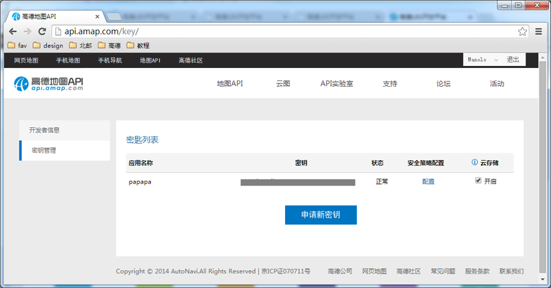
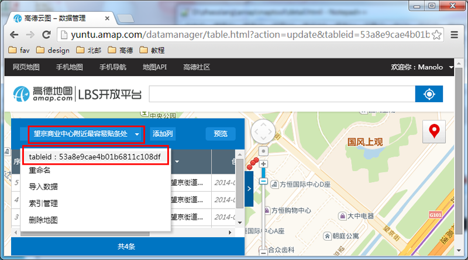
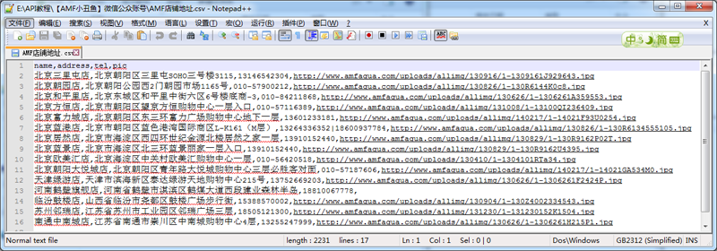
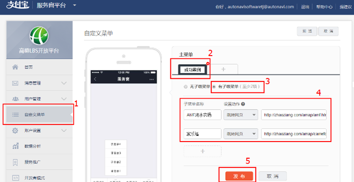
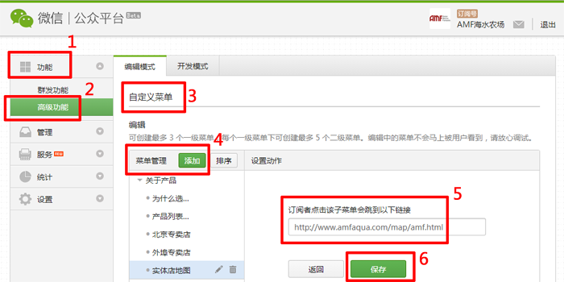
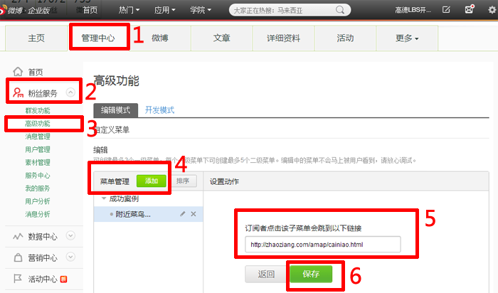
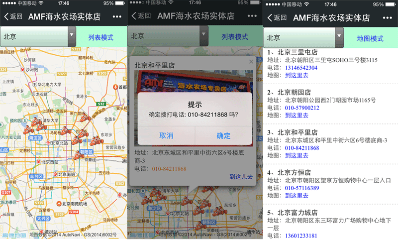

登录密钥管理页面http://api.amap.com/key/，点击申请key按钮。
填入信息后，即可获得key。
复制您的key，到公众号地图工具里即可。

登录云图管理台http://yuntu.amap.com/datamanager/，点击进入您的地图。
点击您的地图，复制下拉框中的tableid即可。

编写CSV文件，保存为UTF-8编码。每次导入数量不超过10,000条。CSV文件请参考以下模板。
name,address,tel,pic
北京三里屯店,北京朝阳区三里屯SOHO三号楼3115,13146542304,http://www.amfaqua.com/uploads/allimg/130916/1-1309161J929643.jpg

1、支付宝公众服务
登录支付宝服务窗https://fuwu.alipay.com/platform/queryMenu.htm
自定义菜单 -> 主菜单 -> 有子级菜单
填写子菜单名称，设置为跳转网页，并且放入网址。
最后点击发布。

2、微信公众平台
登录微信公众平台https://mp.weixin.qq.com。
功能->高级功能->编辑模式->自定义菜单-> 菜单管理->添加->设置动作
设置为跳转网页，并且放入网址。
最后点击保存。

3、微博官方账号
登录微博http://weibo.com/。
管理中心->粉丝服务->高级功能->编辑模式->自定义菜单-> 菜单管理->添加->设置动作
设置为跳转网页，并且放入网址。
最后点保存。

制作并发布您的公众号地图。将您的应用名称、应用简介、应用链接、应用图片120*120px，发邮件到API@autonavi.com。我们会在3个工作日内审核，并发布到官方网站。下图为AMF海水农场微信公众平台的地图服务。提供地图与列表两种展示方式；手机端可调起拨打电话服务；一键导航功能；搜索附近功能等。

如遇到其他问题，请咨询API@autonavi.com。
也可扫描二维码，成为高德LBS开放平台的粉丝，获取更多详细信息。